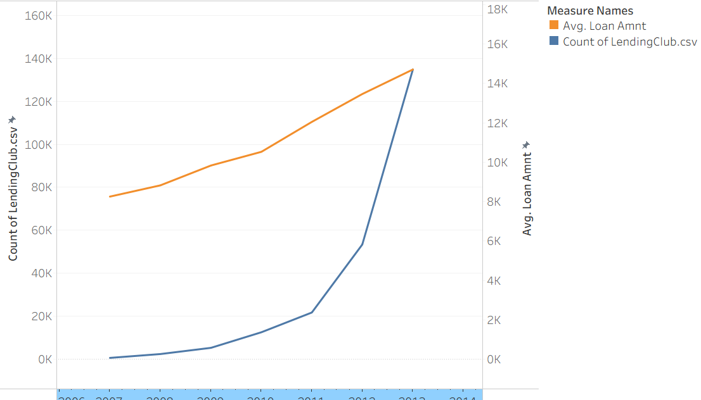
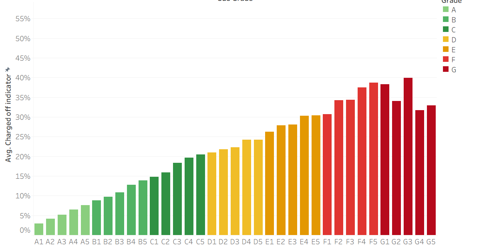
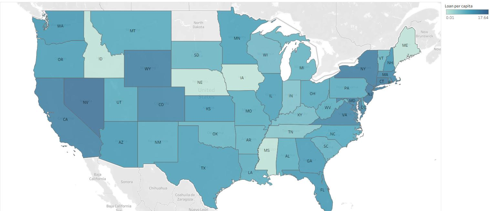

Projects / Where the growth and the credit losses of a marketplace lender come from
Where the growth and the credit losses of a marketplace lender come from
Loans grew 224 times from 2007 to 2013. The charge-off rate rises from 6% for grade A loans to 37% for grade G.
Course project, Michigan Ross MBA. Tableau views of 230,716 public Lending Club loan records. Not client or employer work.
Loans, 2007 to 2013
230,716
$3.17B requested; 224 times more loans in 2013 than in 2007
Average loan
$8.3k to $14.7k
the loan size grew with the platform
Charge-off rate of completed loans
15.5%
6% for grade A, 37% for grade G
The number of loans grew 224 times in six years, and the average loan grew from $8,255 to $14,707

The grade separates risk: the charge-off rate rises at each step from A to G

For each resident, the District of Columbia, Nevada and New Jersey borrow the most

The analysis
Question
How did the platform grow, and where are the credit losses?
Data
230,716 public loan records with issue date, amount, grade, state and final status, joined to state population.
Method
Eight Tableau views: trends by issue date, maps by state, and charge-off rates for loans with a final status.
- Growth stopped for some months in 2008: 57 loans in September against 402 in March.
- The charge-off rate of completed loans fell from 17.9% (2007 loans) to 12.6% (2009), then rose to 16.2% (2012) as the platform grew.
- By total amount, the largest states are California ($519M), New York ($275M) and Texas ($253M). Population explains most of this ranking.
- Among states with 500 loans or more, Tennessee (19.3%) and Nevada (18.9%) have the highest charge-off rates, and the District of Columbia (8.9%) the lowest.